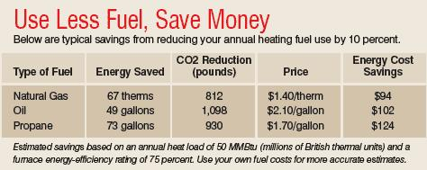
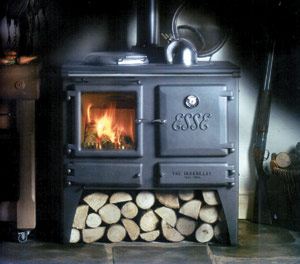
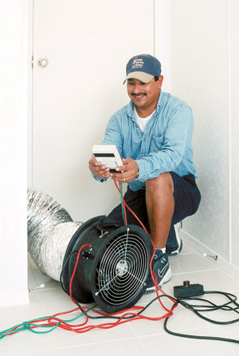

This winter, many people are facing much higher heating bills. The costs of fuel oil and electricity are rising, and natural gas prices are up to 50 percent higher than last year, according to the U.S. Department of Energy (DOE).
As fuel prices rise, it’s tempting to look for the single solution that will shave off a large part of your heating bill, but there are numerous ways to improve the energy efficiency of your home. Many of these are simple, inexpensive steps that can reduce your energy use and bring you immediate savings. You also should keep in mind home improvements that will lead to long-term savings, including purchasing more efficient windows, additional insulation or an energy-efficient heating system. When you’re building a home, remodeling or buying a new heating system, choosing the most energy-efficient options can bring you significant savings over time.
Over the past 12 years, I’ve had the enjoyable job of performing energy audits in thousands of homes, both new and old. What I like to tell people is that energy efficiency shouldn’t be a hardship - in fact, it can be very rewarding. Not only is increasing the energy efficiency of your home a step toward a sustainable use of fuel and less pollution, it also offers you greater security and independence, lower energy bills and can make your home a more comfortable place to live.
The most obvious way to reduce your fuel use is to turn down the thermostat. Think of it as a valve between your fuel supplier and your wallet. For every degree you turn it down, you will use up to 3 percent less heating energy. A 10-degree setback overnight or while you’re at work will cut your heating bill by up to 10 percent.
When you use a programmable thermostat, you save energy without even thinking about it - simply adjust the settings to turn the temperature down automatically while you’re away from home. Keep in mind that it doesn’t take long to heat your home to a comfortable level - only about 15 minutes. Never adjust the thermostat above the desired temperature; doing so will not heat your home any faster.
Some heating systems allow you to provide temperature control to different heat “zones” in the house. If you are installing a new heating system, make sure you have enough zone control to keep seldom-used areas of the house at cooler temperatures (see "Types of Heating Systems," below).
Older windows are often big energy wasters. When you’re ready to invest in new windows, many energy-efficient options are available (see High-performance Windows and Install Your own Windows). But before you buy, you should know there are several inexpensive repairs that can improve the performance of your current windows.
When assessing the condition of your windows, look for the number of panes of glass (also called glazing), and how tightly the windows close. If the sashes and frames are rotten, then it’s time to think about new windows. Any drafts you feel when standing next to a window are likely due to air infiltration around the window frame or sash perimeter. Address drafts by installing sash locks and weatherstripping around the perimeter of the window. For double-hung windows, consider side-mounted sash locks that pull the window tight to the sides of the frame, not just where the sash rails meet.
You can remove the inside trim surrounding the window to see how it was installed into the framing cavity. Any air space between the house shell and the window frame can cause significant air leakage and should be sealed. If the gap is not too wide, then it can be sealed with caulk, backer rod or nonexpanding foam. For windows with ropes and pulleys, buy pulley seals to stop air infiltration there.
You can reduce heat loss through windows by covering them with plastic window film or insulating window inserts, such as those available at www.windotherm.com. Another option is to make simple window quilts by sandwiching a piece of Bubble Wrap between two pieces of cloth material, which can be rolled up and down as needed.
A typical heating system will last about 20 years, although some have been around much longer. If yours is 15 years old or more, then it is a good candidate for replacement: Efficiency can range from about 60 percent in older equipment to 95 percent or higher in modern systems. The Annual Fuel Utilization Efficiency (AFUE) is a standardized test of a heating appliance’s overall efficiency and is listed on the yellow EnergyGuide tags found on heating equipment. A boiler AFUE rating of 85 percent or better qualifies it for the Energy Star label, while a furnace requires a rating of at least 90 percent to receive an Energy Star label.
But before you buy a new heating appliance, consider low-cost maintenance and relatively inexpensive upgrades, which offer significant energy savings to anyone with a furnace, boiler or combination system.
Maintenance you can do yourself. Preventive maintenance is the best way to maximize the efficiency and life of your heating system. Simple things you can do include:
Professional maintenance. To keep your heating system operating smoothly and safely, you will need to have it cleaned, tuned and adjusted annually if it’s oil; every two years if it’s gas. Here are a few things a technician can do during that service:
Repair ducts in forced-air systems. Unless ducts are perfectly sealed and insulated, they waste valuable energy and compromise the quality of your indoor environment. Studies of homes across the United States have shown that a modest investment in duct repairs (often about $200) can achieve average annual heating energy savings of 17 percent.
Heat passing through ducts will be readily lost to colder areas because ductwork often runs through unheated spaces, such as basements and attics, and through the interior of outside walls. Air leaks in the supply side of the ductwork allow conditioned air to move into unconditioned spaces, while leaks in the return side can suck air from places such as the attic and basement, circulating this potentially lower-quality air throughout your house. Small leaks can lead to large increases in energy costs, poor delivery of conditioned air, as well as a dusty house and decreased comfort.
A technician can test for air leaks in your ductwork. Typical repairs include sealing all seams with UL-181-approved foil tape or mastic, which meets industry standards for air ducts. Do not use regular cloth duct tape - studies have found that it fails after about six months. Another professional method for repairing ducts is to spray a sealant called Aeroseal into the ductwork. As the product finds its way out of leaks, it expands to seal the hole. After sealing, the ducts should be wrapped with at least R-5 insulation. (R-values measure resistance to the flow of heat; the higher the R-value, the better the insulator.)
Equipment improvements for boilers. Things that a professional heating contractor can do to improve the efficiency of your boiler include:
Air leaks between the inside and outside of a building are often the biggest source of heat loss. How do you find the leaks? Sometimes you can feel the drafts; you also can walk around the inside of the house with a smoking incense stick on a windy day and watch for changes in the direction of the smoke. But air leaks are usually hidden, so the best way to find them is to hire an experienced energy auditor. The cost of a home energy audit can vary widely - most are between $100 and $500 - but the expense quickly pays for itself in energy savings. Some utilities and state energy programs offer free or low-cost energy audits; check to see what services are available in your area.
Once you have identified air leaks, many inexpensive options for air-sealing improvements are available. These can include using caulk to fill gaps no wider than half an inch; filling larger gaps with expanding foam; adding weatherstripping around windows, doors and attic hatches; and putting foam gaskets behind outlet and switch plates.
The DOE recommends different R-values for different climates. (Go to www.eere.energy.gov/consumer/tips/insulation.html to search recommendations by ZIP code.) Based on my experience as a home energy auditor, I strongly encourage you to insulate your home to these levels. In fact, local building codes may require higher R-values for new homes than those listed by the DOE. An energy auditor or insulation contractor can tell you how much insulation you have in your walls, ceiling, floors and basement; make recommendations for improvements; and give you an idea how much such improvements will cost.
Spending what may seem like a large amount of money to upgrade insulation in a new or existing home can offer significant savings during the long-term ownership of your home. If your budget is limited, attics are an easy place to add insulation at a minimal cost, and it’s easy to do yourself. Many attics can be insulated to recommended levels for only $200 to $500.
The options listed below are the most popular types of heating systems. Each offers different options for heating delivery and control.
Furnace. This type of system heats air with oil, natural gas, propane, electricity or biofuels. A fan pushes the hot air through ductwork to distribute heat throughout the home. This type of heat distribution is called “forced air,” and these systems are popular because they can share a distribution system with the central air-conditioning. The main drawback of furnaces is the tendency for ductwork to leak both air and heat if not properly sealed and insulated. It’s also more difficult to create heat zones with a furnace, which you will need to do if you want to heat different areas of your house to different temperatures. To create heat zones, you will have to install a new system expressly for that purpose.
Boiler. Hot water is distributed to each room by baseboard units, radiant heat tubes under or within a floor, or radiators. Heat distribution from a boiler is clean, quiet and easily zoned - a different thermostat can be placed in every room. A boiler can be a good option if you don’t need central air-conditioning, which requires a forced-air system. Many older houses use radiators, but radiant-floor heating is becoming more popular. This option can save energy by keeping your home more comfortable at lower temperatures, but installing radiant-floor heating is labor-intensive, which can make it an expensive choice.
Combination Systems. A water heater or boiler also can be used in conjunction with forced-air heat distribution. As hot water circulates through the coil, a fan blows air over it, distributing the heat through the ductwork to your house. This type of forced-air system is easier to zone than a furnace.
Electric Resistance Heat. Electric baseboard heaters use this type of heat, which is created by resistance to the flow of current. In most parts of the country, the cost of electricity makes this an expensive option unless you will need to use it infrequently. In this case, it can be a practical choice because it is inexpensive to install and easy to create heat zones.
Space Heaters. Woodstoves, fireplace inserts and gas or kerosene room heaters are good, low-cost heating options if you have an open floor plan, live in a warm climate or have a small or very efficient home. Unvented space heaters (the kind that burn fuel, but don’t require a chimney) present heath, safety and durability problems and should not be used.
These groups offer extensive resources for learning more about energy efficiency.
American Council for an Energy-Efficient Economy
(202) 429-8873
Find ways to save energy and learn about U.S. energy policies.
Energy Star program
(888) 782-7937
Learn about Energy Star-certified homes, and energy-efficient heating systems and other appliances.
Energy Efficiency and Renewable Energy Clearinghouse
Find consumer information, tips for renters and recommendations for how much insulation to use in your climate.
Many hardware stores carry supplies for weatherizing your house and repairing ducts, or try these online retailers.
AM Conservation Group
(800) 777-5655
Energy Federation
(800) 379-4121
Residential Energy Services Network
(760) 860-3448
Find energy auditors in your area.
Home Energy Saver
Take this Web-based survey to get suggestions for improving efficiency.
- Adapted from The Home Energy Diet: How to Save Money by Making Your House Energy Smart, a Mother Earth News “Book for Wiser Living” by New Society Publishers.
|
COSMO & ACTION/GETTY IMAGES Making these easy, inexpensive changes will save you big bucks this winter. |
 MOTHER EARTH NEWS STAFF Typical savings from reducing your annual heating fuel use by 10 percent. |
 COURTESY VICTORIAN FIREPLACE SHOP Heating systems come in many varieties. An efficient woodstove can make a great space heater. |
|
 CHARLIE CASTILLEGA/NREL Improve the efficiency of your furnace by hiring a professional to test ducts in your house for leaks that need repair. |
|
|